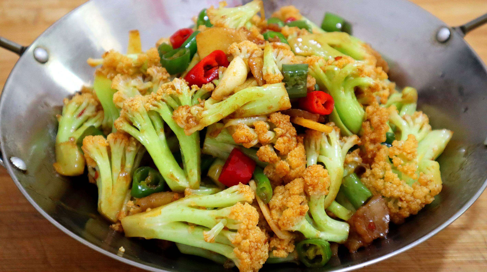

Spicy Cauliflower

Descriptions
Dry Pot Cauliflower is a restaurant favorite that we’ve had
countless times in China. It’s our vegetable of choice
when eating out. You might think it sounds boring, but we
discovered that cauliflower can be amazingly delicious with
a little spice, saltiness and the addition of pork belly.
Ingredients
- 8 ounces pork belly
- 1/4 teaspoon salt
- 1 teaspoon light soy sauce
- 2 teaspoons shaoxing wine
- 1 pound cauliflower
- 2 tablespoon oil
- 10 cloves garlic
- 4 slices ginger
- 3 dried chilies
- 1/2 of a red bell pepper
- 1 teaspoon sesame oil
- 1/2 teaspoon white pepper
- 1 tablespoon oyster sauce
- 1/4 teaspoon sugar
- 1/2 cup water
- 3 scallions
Steps
- Prepare the pork belly. Marinate it with ¼ teaspoon salt,
1 teaspoon light soy sauce, and 2 teaspoons Shaoxing wine.
Set aside. Wash the cauliflower and cut it into bite sized
pieces.
- Heat the oil in a wok set over medium heat. Cook the
garlic cloves for a minute. Add the ginger and chilies
(if using), and cook for another minute. Add the pork,
turn up the heat, and cook until the meat turns opaque.
- Next, add the cauliflower and red bell peppers. Stir-fry
for 1 minute. Add ½ teaspoon salt, 1 tablespoon light soy
sauce, 1 tablespoon Shaoxing wine, 1 teaspoon sesame oil,
½ teaspoon ground white pepper, 1 tablespoon oyster sauce,
¼ teaspoon sugar, and ½ cup water. Stir, cover, and cook
for 1- 2 minutes. (I like more tender cauliflower, so I
cook it for 2 minutes.)
- Uncover, add the scallions, give it a stir, and serve!